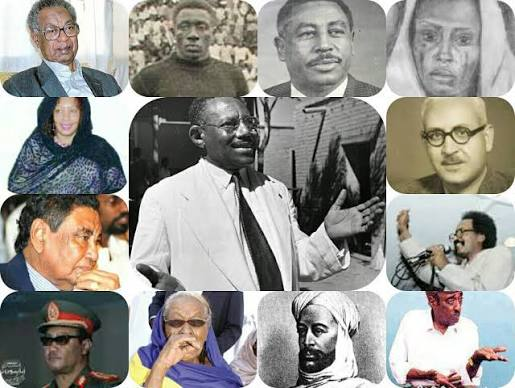
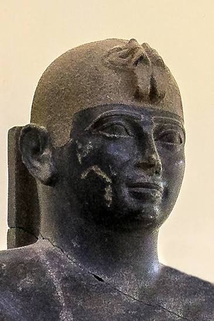
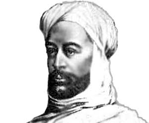
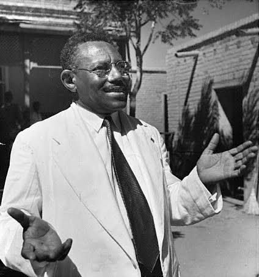
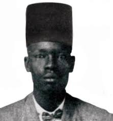

Discover
Sudan

حين نتحدث عن الشخصيات السودانية البارزة، فنحن نتحدث عن أناس حملوا على عاتقهم مسؤولية وطن بأكمله. واجهوا الصعاب، وضحوا براحتهم، وتركوا بصمة لا تزال حاضرة في ذاكرة السودانيين حتى اليوم. قادوا شعوباً في أوقات عصيبة ونشروا العلم والثقافة ورفعوا اسم السودان عالياً.

رمز من أهم الرموز في تاريخ السودان القديم. كان قائداً شجاعاً آمن بقوة شعبه وحمل راية بلاده حتى أصبح اسمه يلهم الاحترام في العالم القديم. أقام المعابد والعمائر وكانت كل معركة خاضها رسالة تؤكد أن هذه الأرض هي مسقط رأس العظماء والحضارات.

قائد استطاع أن يوحد الشعب في زمن مليء بالتحديات، وأشعل في قلوب السودانيين روح العزة والإرادة. أصبح رمزاً للشجاعة والصمود في الدفاع عن الأرض وصناعة التاريخ بالإرادة الوطنية.

رمز الاستقلال والزعيم الذي ارتبط اسمه بحدث رفع علم السودان حراً مستقلاً. ناضل من أجل وطن يقف بين الأمم مرفوع الرأس، وظل اسمه مرتبطاً بالحرية وكرامة الوطن.

أحد أبرز قادة الحركة الوطنية التي طالبت بالحرية واستقلال السودان. ضحى بشبابه وراحته وتحمل السجن والنفي من أجل المبادئ الوطنية التي آمن بها، ليبقى اسمه محفوراً كرمز للتضحية في سبيل الوطن.
